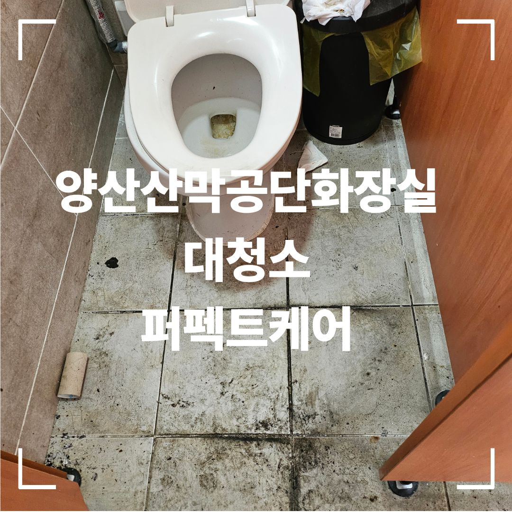

위생기기와 바닥을 나누어 세부적으로 정리
소변기와 변기, 세면대는 오염 형태가 서로 달라 한 번에 같은 방식으로 처리하기보다 각 부위 상태에 맞춰 작업하는 것이 중요합니다.
특히 바닥은 타일 표면뿐 아니라 줄눈과 모서리, 위생기기 하부, 배수구 주변에 오염이 모이기 쉬워 반복 세척과 마무리 확인을 진행했습니다.
- 소변기·변기 내부 및 외부 표면 관리
- 세면대와 수전 주변 오염 정리
- 바닥 타일·줄눈·모서리 청소
- 배수구 주변과 물때가 남기 쉬운 부분 확인
